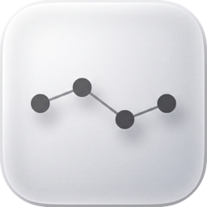

Summon.
Launch Subtext once, record your global shortcut in Settings, then press it anywhere. The panel floats over the current app without stealing window focus.

Subtext DownloadmacOS 14+ · signed & notarized · no account
Subtext turns the macOS text replacements you already own into a floating, keyboard-first panel. Press a shortcut, type a few letters, hit Enter — the snippet is on your clipboard.
Press / to focus. ↑↓ move · Enter copy · Esc clear.
Demo copies example snippets only. The real app reads your macOS text replacements.
No new snippet database.
Subtext reads the replacements already stored in macOS.
No sync service.
System Settings and iCloud stay the source of truth.
No subscription.
Free, MIT-licensed, signed and notarized.
Fast by default.
Keyboard-first, clipboard-out, gone on Escape.
Apple Silicon build.
Intel Macs can build from source.
Direct answer
How it works
Launch Subtext once, record your global shortcut in Settings, then press it anywhere. The panel floats over the current app without stealing window focus.
Type a few letters. Subtext re-reads the system replacement list every time the panel opens, so newly added replacements show up on the next summon.
Use ↑ and ↓ to move. Press Enter to copy, Escape to dismiss. Your hands never leave the keyboard.
The point
FAQ
A small macOS utility that gives your system text replacements a fast, searchable, keyboard-driven interface — a snippet launcher for the replacements you already own.
No — it complements the built-in macOS text replacement system instead of introducing another snippet store. Your replacements stay in System Settings and keep syncing through iCloud to your iPhone and iPad.
You will — close and reopen the panel. Subtext re-reads the system list every time the panel opens.
The prebuilt app is Apple Silicon. On Intel, build from source with swift build -c release.
Nothing. No network calls, no analytics, no accounts. It reads one macOS preferences key and writes to your clipboard when you ask it to.
Download
Requires macOS 14 Sonoma or later. Prebuilt app: Apple Silicon. Signed with Developer ID and notarized by Apple.
eb504c9c324dd607037e3e77b94f8286e551f4a1cf283b7350bca64fd983e7f8